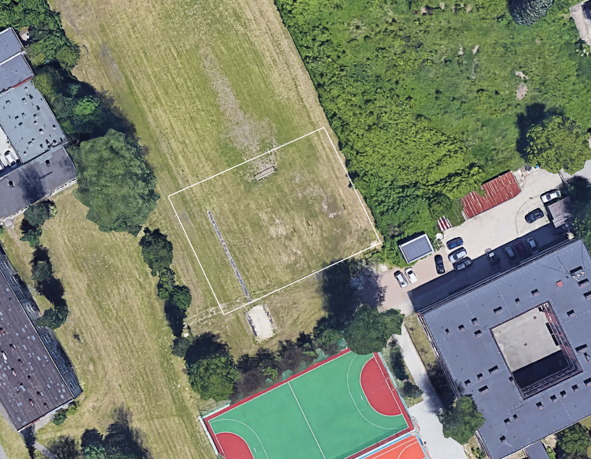
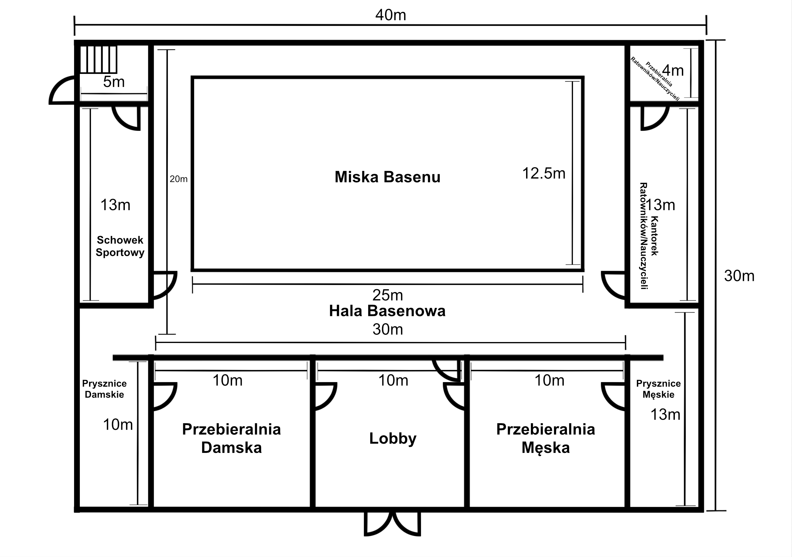
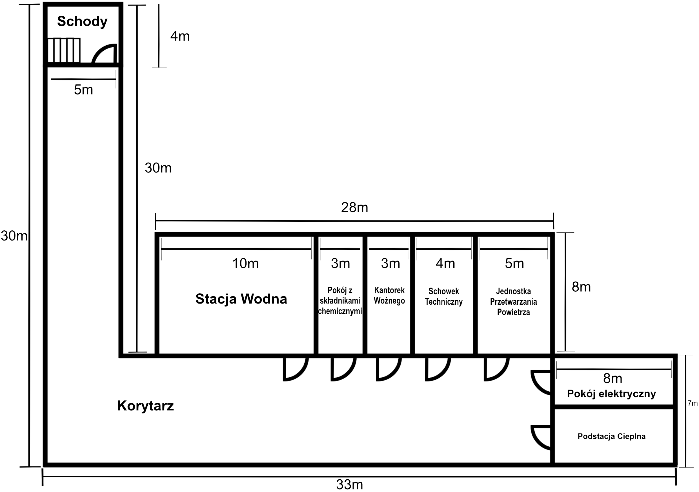
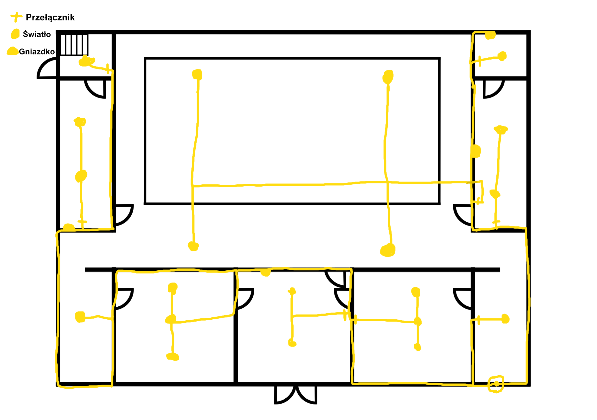
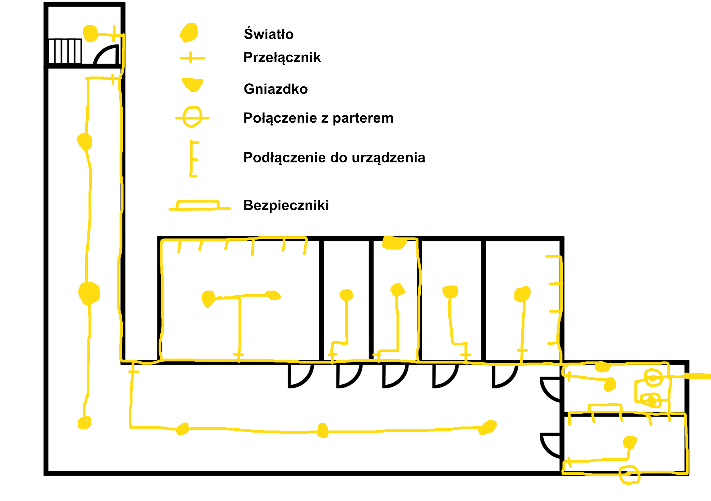
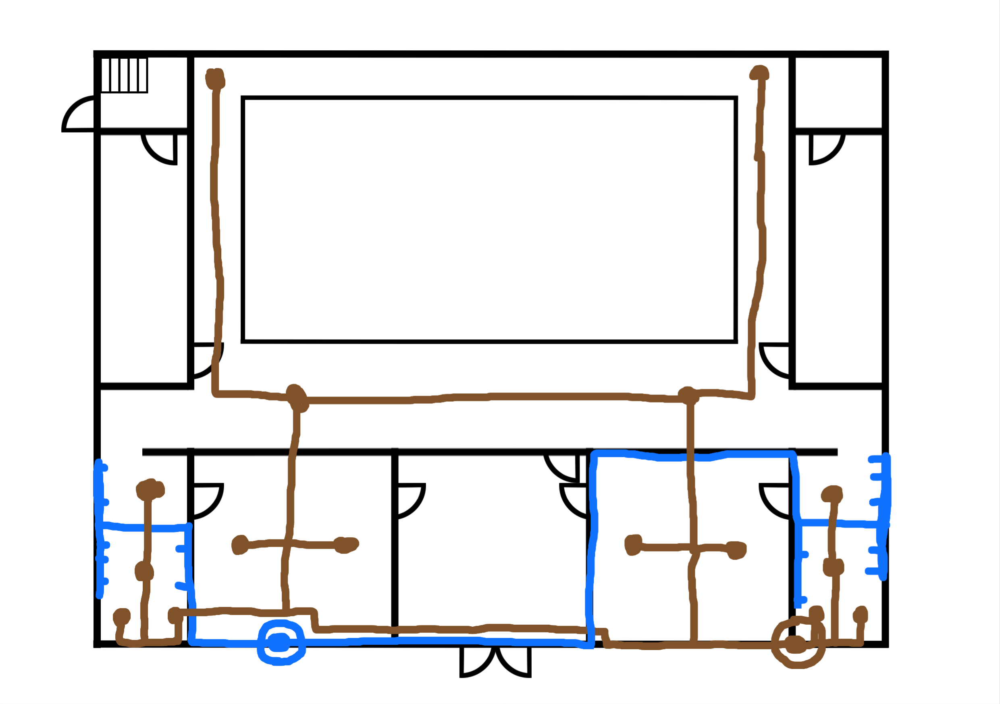
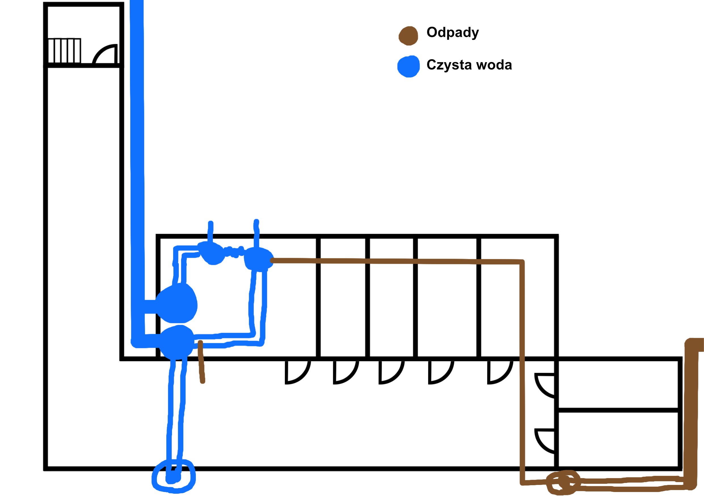
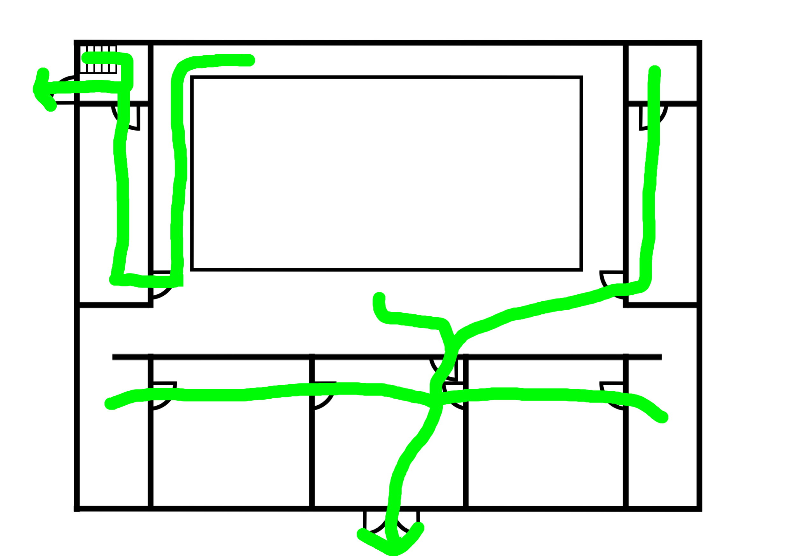
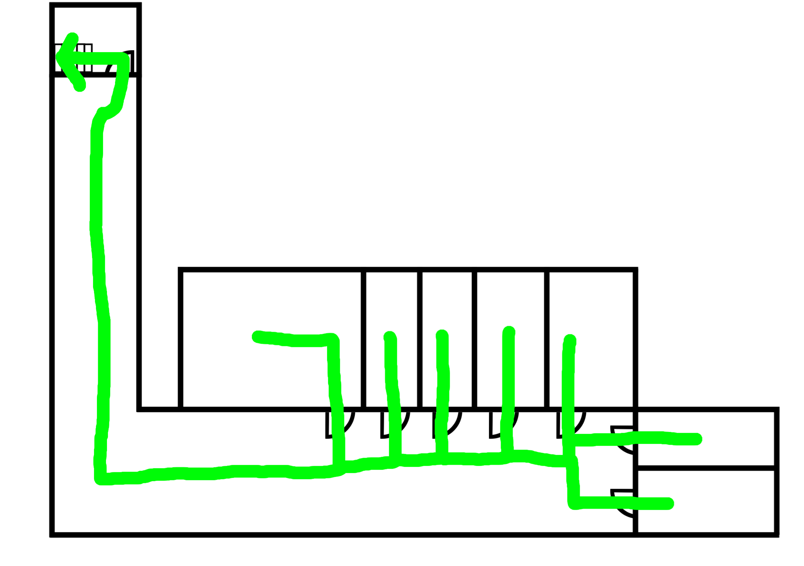

Plany i lokalizacja
-
Lokalizacja

Najlepzym miejscem na powstanie basenu będzie na boisku trawiastym znajdującym się na północny zachód od budynku pracowni. Jest tam wystarczająco dużo miejsca na jego budowę, a także znajduje się tuż obok parkingu, który ułatwi dostęp mieszkańcom okolicy. Dokładne umiejscowienie budynku jest oznaczone białymi liniami na powyższym obrazie.
-
Plany wymiarowe basenu
Parter

Plan przedstawia budynek basenu o wymiarach około 40 × 30 metrów. W centralnej części znajduje się hala basenowa z niecką basenu o wymiarach około 25 × 12,5 m, otoczoną przestrzenią komunikacyjną. Głębokość basenu wynosi 1.5 metra po stronie lewej oraz 1.9 metra po stronie prawej. Po obu stronach są 3 metry równej powierzchni, między którą jest liniowa rampa obniżająca głębokość. Od strony wejścia zaplanowano lobby prowadzące do dwóch symetrycznych stref przebieralni – damskiej i męskiej – każda połączona z własnymi prysznicami, które prowadzą do hali basenowej poprzez brodzik. Po lewej stronie hali znajduje się schowek sportowy, natomiast po prawej zaprojektowano pomieszczenia dla ratowników i nauczycieli, w tym małą przebieralnię. Układ budynku jest czytelny i funkcjonalny – strefa wejściowa prowadzi przez przebieralnie i prysznice bezpośrednio do hali basenowej, a pomieszczenia techniczne i zaplecze rozmieszczono po bokach obiektu. Wszystkie drzwi otwierają się tak, aby nie było potrzeby ich ciągnięcia w wypadku ewakuacji.
Piwnica techniczna

Plany piwnicy basenu przedstawiają układ zaplecza technicznego z centralnym korytarzem o długości 25 metrów, z którego dostępne są kluczowe pomieszczenia obsługujące obiekt: stacja wodna, jednostka przetwarzania powietrza, podstacja cieplna, pomieszczenie elektryczne, magazyny techniczne oraz pokoje na środki chemiczne i zaplecze woźnego; całość uzupełniają schody prowadzące na parter, tworząc funkcjonalny i logicznie zorganizowany układ infrastruktury basenowej. Drzwi na tym poziome – podobnie jak na parterze – ułożone są tak, aby unikać kolizji wynikających z potrzeby ich ciągnięcia.
Plany Elektryczne
Parter

Piwnica techniczna

Plany elektryczne przedstawiają kompletny układ instalacji dla parteru oraz piwnicy technicznej, pokazując rozmieszczenie oświetlenia, gniazd elektrycznych, przełączników, a także przebieg przewodów zasilających między pomieszczeniami. Na parterze schemat koncentruje się na podstawowych obwodach użytkowych – światłach i gniazdkach obsługujących strefy ogólne. W piwnicy technicznej plan jest rozszerzony o połączenia z urządzeniami technologicznymi, bezpieczniki, a także główne linie zasilające prowadzące do pomieszczeń takich jak stacja wodna, jednostka przetwarzania powietrza czy podstacja cieplna.
Plany sieci wodnej
Parter

Piwnica techniczna

Plany sieci wodnej pokazują kompletny układ dystrybucji czystej wody oraz odprowadzania ścieków dla parteru i piwnicy technicznej, tworząc spójny obraz funkcjonowania instalacji w całym obiekcie. Na parterze widoczny jest rozprowadzony system zasilający pomieszczenia użytkowe – punkty poboru wody oraz linie odpływowe prowadzone do pionów kanalizacyjnych. W piwnicy technicznej instalacja przyjmuje bardziej infrastrukturalny charakter: główne magistrale czystej wody biegną do urządzeń technologicznych, zbiorników i pomp, a przewody odpływowe kierowane są do głównego kolektora budynku.
Plany dróg ewakuacyjnych
Parter

Piwnica techniczna

W wypadku zagrożenia, plany dróg ewakuacyjnych przedstawiają klarowny i zgodny z zasadami bezpieczeństwa układ tras prowadzących użytkowników zarówno z parteru, jak i z piwnicy technicznej do najbliższych wyjść lub klatek schodowych. Zielone ciągi komunikacyjne wyznaczają jednoznaczne kierunki ruchu, omijając strefy techniczne i prowadząc przez główne korytarze do punktów ewakuacyjnych. Na parterze trasy skupiają się na szybkim opuszczeniu części użytkowej budynku, natomiast w piwnicy technicznej uwzględniają specyfikę pomieszczeń infrastrukturalnych, zapewniając bezpieczne wyprowadzenie personelu z obszarów o podwyższonym ryzyku. Całość tworzy spójny i intuicyjny system ewakuacji, który ułatwia orientację w sytuacjach awaryjnych i spełnia kluczowe wymagania projektowe obiektów basenowych.